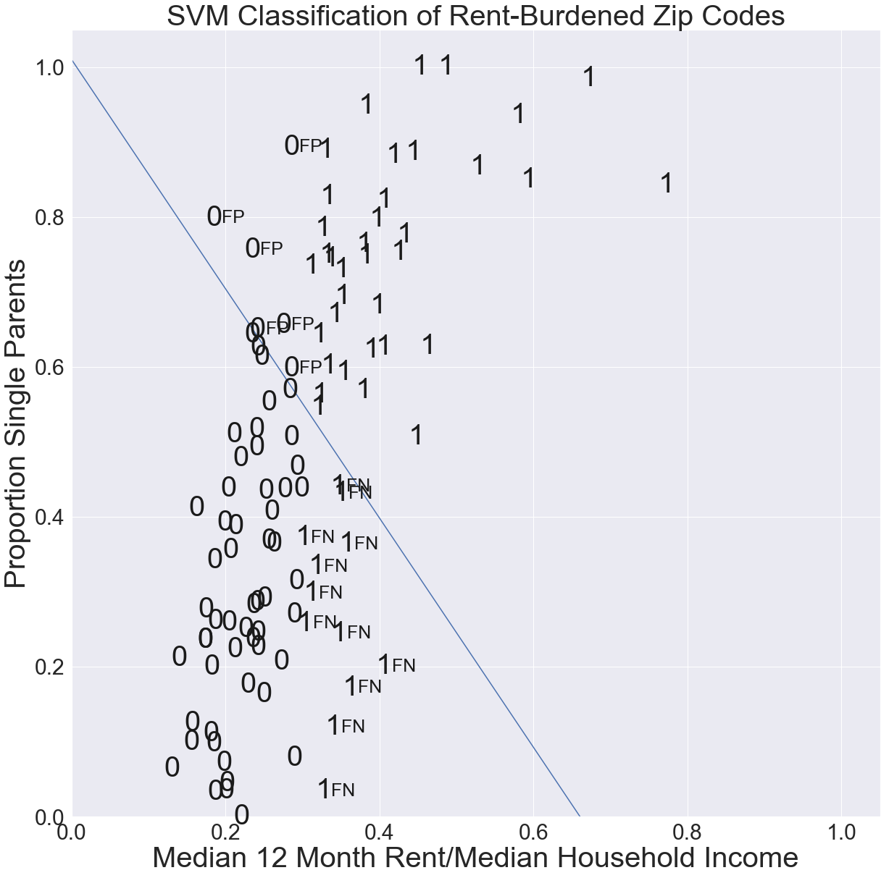
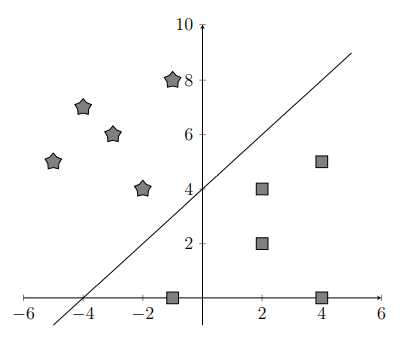
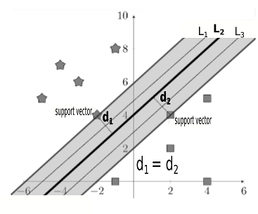
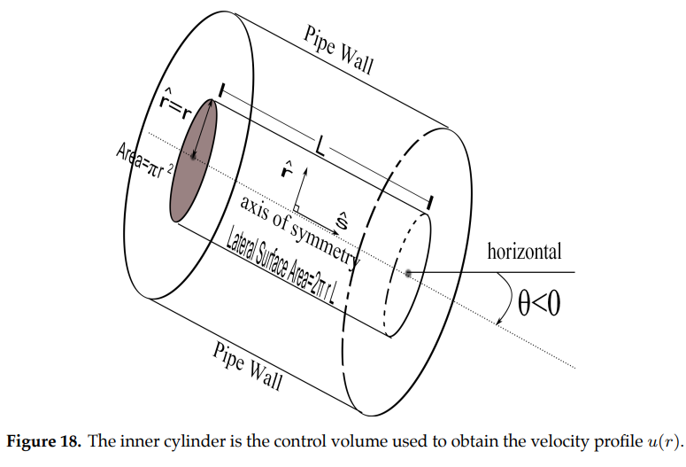
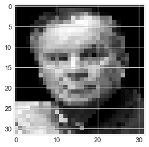
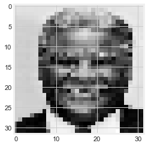

5. Binary Classification of Labelled Data by Support Vector Machines#
In this section we consider data points that are labelled as belonging to one of two classes. Our goal is to determine a line (more generally, a hyperplane) that correctly separates the data. That is, all the points in one class are on one side of the line (hyperplane), and all the points in the other class are on the other side. For example, the scatterplot in the figure below is an example of linearly separable data, meaning that the data can be correctly separated by a line. The scatterplot shows for each Chicago zipcode the median proportion of income spent on rent vs.\ percentage of single-parent households. The labels indicate 1 = rent-burdened (median 12-month rent is more than 30% of median annual income) or 0 = not rent-burdened. As such, the line \(x=0.3\) separates the data. Points on one side of the line are in one class, and points on the other in the other class.

As shown in the figure below, a line that does not correctly separate the labelled data will create false positives (FP) and/or false negatives (FN). An FP is a point that the line indicates to be in class 1 but which in fact is in class 0; an FN is a point that the line indicates to be in class 0 but which actually in class 1.
{kind=link}
Intuition Underlying SVM#
For simplicity, let us consider a small number of data points with each point labelled as belonging to one of two distinct groups indicated by a pentagon or square. Our goal is to find a boundary line that separates the two groups.

We might separate the data with a line as shown below.
{kind=link}
Likewise, if we had data in a 3D coordinate system, we could separate the data by a 2D plane. Such a boundary in any dimensional space that separates the labelled points into 2 groups is called a hyperplane. As shown below, multiple hyperplanes can correctly separate data points into 2 groups.

It’s clear that some lines (hyperplanes) separate the data better than others. However, the mathematical description of the optimal line is not necessarily obvious. To describe this optimal hyperplane, we need to introduce two new terms, \emph{support vectors} and \emph{margins}. A support vector is a vector whose terminal point \(P_n\) in group \(C_n\) (\(n=1,2\)) is closest to the hyperplane. Since we have two groups, we’ll have at least two support vectors. The margin of a hyperplane is the sum \(d_1+d_2\) of the distances between the two closest points and the hyperplane.
 In the figure above, $P_1$ and $P_2$ are support vectors.
In the figure above, $P_1$ and $P_2$ are support vectors. The figure below shows that while the parallel separating hyperplanes \(L_1\), \(L_2,\) and \(L_3\) all have the same margin, only the SVM hyperplane \(L_2\) is equidistant (\(d_1=d_2\)) from support vectors in both classes.
{kind=link}
An ideal hyperplane would separate the data most clearly, and thus we would not want the hyperplane to be very close to any of the data points. Instead, the ideal hyperplane is as far from both classes of data as possible while continuing to separate the two groups. Thus, we should aim to maximize the margin around the hyperplane. However, given a fixed margin, there are multiple hyperplanes that correctly separate the data, as shown in the figure above. The separating line \(L_1\) is close to the star data but well-separated from the square data. \(L_1\) is not an ideal hyperplane because a small error in the star data could result in incorrectly separated points. In order to prevent small variations in the data from affecting the grouping of points, we should look for a hyperplane that is well-separated from both classes, namely, the hyperplane that has a maximized margin and is equidistant from support vectors in the two classes.
Mathematical Formalism#
Consider the binary classification of a labelled training data set consisting of \(n\) data points (observations). Each data point has \(m\) coordinates (features) and is represented by a row vector in \(\mathbf{R}^m\). Binary class membership is indicated by the labels \(y_i\in\{+1,-1\}.\) The classification problem that we consider involves
i) finding a hyperplane that separates points by their class, using a labeled training set (see table below) to supervise the classification; and ii) using the hyperplane to make a prediction as to the class of a new point given just its features.

Separating Hyperplanes#
The goal of linear separation is to find components of a vector \(\mathbf{w}=\langle w_1,\dots,w_m \rangle\) and real constant \(b\) such that the hyperplane \(\pi(\mathbf{w},b)\) defined by the equation \(\mathbf{w}\cdot\mathbf{x}+b=w_1 x_1 + w_2x_2 + \dots + w_mx_m+b=0\) is a linear separator of the labelled training data \((\mathbf{x}_1,y_1),\dots,(\mathbf{x}_n,y_n)\). That is, for all \(i=1,\dots,n\):
\(\mathbf{w}\cdot\mathbf{x}_i+b>0\) if \(y_i=+1\), and
\(\mathbf{w}\cdot\mathbf{x}_i+b<0\) if \(y_i=-1\).
For the hyperplane \(\pi(\mathbf{w},b)\), \(\mathbf{w}\) is called the normal vector and \(b\) the intercept.
Define the half spaces $\(\pi^+(\mathbf{w},b)=\{\mathbf{x} \mid \mathbf{w}\cdot\mathbf{x}+b>0\},\qquad \pi^-(\mathbf{w},b)=\{\mathbf{x} \mid \mathbf{w}\cdot\mathbf{x}+b<0\}.\)\( The hyperplane \)\pi(\mathbf{x},b)\( separates the data \)\mathbf{x}_1, \mathbf{x}_2, \dots ,\mathbf{x}_m\( if for each \)i = 1, \dots, m\(, \)\mathbf{x}_i\in\pi^+\( if \)y_i=1\( and \)\mathbf{x}_i\in\pi^-\( if \)y_i=-1$.

In the figure above, the hyperplane \(\pi\bigl((1,1,1),-1\bigr)\) with normal vector \(\mathbf{w} = (1,1,1)\) and intercept \(b = -1\) is the set of all points in \((x_1, x_2, x_3)\) which satisfies the equation \(x_1 + x_2 + x_3 - 1 = 0\). The half spaces are
The data point \(\mathbf{x}_1=(0,0,0)\) with label \(y=-1\) is in \(\pi^-\), and the data points \(\mathbf{x}_2=(1,1,0)\) and \(\mathbf{x}_3=(1,1,1)\) with label \(y=1\) are in \(\pi^+\). The hyperplane \(\pi\bigl((1,1,1),-1\bigr)\) correctly separates the three labelled training points.
Signed Distance#
The signed distance, denoted \(\rho(\mathbf{x},\pi)\), from a data point (vector) \(\mathbf{x}\) to the hyperplane \(\pi(\mathbf{w},b)\) is
Signed distance is such that \(\rho(\mathbf{x},\pi)>0\) when \(\mathbf{x}\in \pi^+\) and \(\rho(\mathbf{x},\pi)<0\) when \(\mathbf{x}\in\pi^-\). These signed distances are shown in the figure below.
{kind=link}
Let \(C_1\) be the subset of data points with label \(y=1\) and \(C_2\) be the subset of data points with label \(y=-1\). The (non-negative) distance \(\rho(\pi,C)\) between hyperplane \(\pi\) and class \(C\) is defined as
The margin \(m(\pi,C_1,C_2)\) of a hyperplane \(\pi\) that separates classes \(C_1\) and \(C_2\) is defined as the sum of the (non-negative) distances between \(\pi\) and classes \(C_1\) and \(C_2\):
In our example, \(C_1=\{(1,1,0),(1,1,1)\}\), \(C_2=\{(0,0,0)\}\), \(\rho(C_1,\pi)=2/\sqrt{3}\), and \(\rho(C_2,\pi)=1/\sqrt{3}\). The margin is therefore \(m(C_1,C_2,\pi)=1/\sqrt{3}+1/\sqrt{3}=2/\sqrt{3}\).
Optimization for Linearly-Separable Data#
For classifying data points, SVM seeks a hyperplane \(\pi(\mathbf{w},b)\) that
i) \(\,\) correctly separates the training data,
ii) \(\,\) has maximum margin (this is desirable to allow for measurement error or noise in the data), and
iii) \(\,\) is equidistant from both classes of training data.
The support vectors are the data points in each class that are closest to the SVM hyperplane. Under the assumption that the training data are linearly separable, our goal to separate the data using a hyperplane \(\pi(\mathbf{w},b)\) is achieved by the following:
SVM OPTIMIZATION PROBLEM (separable training data)
Find \(\mathbf{w}\) and \(b\) that will
subject to the constraints
i) , \(\mathbf{w}\cdot\mathbf{x}+b\ge 1\) for all \(\mathbf{x}\in C_{1}\)
ii) , \(\mathbf{w}\cdot\mathbf{x}+b\le -1\) for all \(\mathbf{x}\in C_{2}\)
where \(C_{1}\) and \(C_{2}\) are (non-empty) classes of labelled training vectors.
A result from convexity theory says that there will be a unique solution if the training classes \(C_1,C_2\) are linearly separable, and no solution if they are not linearly separable [Aggarwal 2020]. A vector \(\mathbf{x}^*\) is a support vector if either \(\mathbf{w}\cdot\mathbf{x}^*+ b = 1\) or \(\mathbf{w}\cdot\mathbf{x}^*+ b= -1\).
Note that by minimizing \(J = \frac{1}{2}\|\mathbf{w}\|^2\), we are maximizing \(d=\frac{1}{\|\mathbf{w}\|}\). From constraint {\bf (i)}, we have \(\rho(\mathbf{x}, \pi)=\frac{\mathbf{w}\cdot\mathbf{x}+b}{\|\mathbf{w}\|}\ge \frac{1}{\|\mathbf{w}\|}=d\) for all \(\mathbf{x}\in C_{1}\). From constraint {\bf (ii)}, we have \(\rho(\mathbf{x},\pi)=\frac{\mathbf{w}\cdot\mathbf{x}+b}{\|\mathbf{w}\|}\le \frac{-1}{\|\mathbf{w}\|}=-d\) for all \(\mathbf{x}\in C_{2}\). The margin is therefore \(2d\). Hence, the minimization of \(J=\frac{1}{2}\|\mathbf{w}\|^2\) maximizes the margin \(2d=\frac{2}{\|w\|}\). For our example, using the Jupiter Notebook at https://tinyurl.com/ypasckyh, the support vectors are \(\langle 0,0,0 \rangle\) and \(\langle 1,1,0 \rangle\). This gives us the SVM separating hyperplane \(\pi\bigl((1,1,0),-1\bigr) \) or \(x_1 + x_2 -1 = 0\) with a margin of \(\sqrt{2}\). This margin is indeed larger than the margin \(2/\sqrt{3}\) that we obtained with our previous separating hyperplane \(x_1+x_2+x_3-1=0.\)
Optimization for Non-Separable Data#
In general, the training data might not be linearly separable. In this case, our goal to find a hyperplane \(\mathbf \pi(\mathbf{w},b)\) that classifies the labelled data is based on the following:
SVM OPTIMIZATION PROBLEM (non-separable training data)
Find \(\mathbf{w}\) and \(b\) that will
where \(\lambda>0\) is a constant called the regularization parameter, and \(J\) is called the SVM \(L_2\) loss function.
For a given choice of \(\mathbf{w}\) and b, a prediction \(\hat{y}_i=\text{sign}(\mathbf{w}\cdot\mathbf{x}_i+b)\) is correct if
i) \(\, \mathbf{w}\cdot\mathbf{x}_i+b>0\) if \(y_i=+1\),
ii) \(\, \mathbf{w}\cdot\mathbf{x}_i+b<0\) if \(y_i=-1\).
The summation term included in this \(L_2\) SVM loss function \(J(w_1,\dots,w_n,b)\) is such that:
-a correct prediction contributes at most 1/2 to the value of \(J\);
-an incorrect prediction contributes at least 1/2 to \(J\); and
-correctly predicted points which are ‘well-separated’ from the separating hyperplane (i.e. \(1-y_i(\mathbf{w}\cdot\mathbf{x}_i-k)\le0\)) do not contribute anything to \(J\).
The term \(\frac{\lambda}{2}\|\mathbf{w}\|^2\) relates to our previous discussion of maximizing the margin. The regularization parameter \(\lambda\) adjusts whether widening the margin or making correct classifications should be weighted more heavily.
Exercise 3) uses a JNB to illustrate how SVMs can be used in binary classification of facial images. Using a training set consisting of \(32\times 32=1024\)-dimensional vectors representing \(32\times 32\) pixel images of former Chicago Mayors Harold Washington and Richard M.\ Daley, an SVM hyperplane is used to predict which mayor is depicted in a set of test images of the two mayors.
Exercises#
Exercises
\(\,\) Let \(\mathbf{w}=(1,2)\in\mathbf{R}^2\) and \(b=-1\).
a) \(\,\)What is the hyperplane \(\mathbf{w}\cdot\mathbf{x}+b =0\)?
b) \(\,\) What are the half spaces (\(\mathbf{R}^b_{\pi})^+\) and (\(\mathbf{R}^b_{\pi})^-\)?
a) \(\,\) Show that \(\pi(\mathbf{w},b)=\pi(k\mathbf{w},kb)\) for any \(k\neq 0\)
b) \(\,\) Show that the signed distance from the origin \(\mathbf{x}=\mathbf{0}\) to the hyperplane \(\pi(\mathbf{w},b)\) is equal to \( \frac{b}{\|\mathbf{w}\|}\).
c) \(\,\) Explain why there are an infinite number of separating hyperplanes with the same margin as the SVM hyperplane. How is the SVM hyperplane determined?
d) \(\,\) In the case where all points in the training set are correctly classified and well-separated, how does the SVM \(L_2\) loss function simplify, and what results from it being minimized?
\(\,\) Binary SVM classification can be used for facial recognition, as demonstrated in the Jupyter Notebook SUPPORT VECTOR MACHINES (at https://tinyurl.com/2neb4z4c). An image can be represented as an \(N\times N\) matrix \(\mathbf{X}\) where the \(i,j\) entry is a number representing the gray scale value of the pixel in row \(i\) and column \(j\). From this matrix, we can form an \(N^2\times 1\) column vector by concatenating rows in the matrix. Suppose that we have a set of images of two Chicago mayors, Mayor Daley and Mayor Washington. Each image is represented as a vector in \(\mathbf{R}^{N^2}\) and is labelled 0 for Mayor Daley and 1 for Mayor Washington. An SVM hyperplane separates the labelled binary training data. Given a new image of either Mayor Washington or Mayor Daley (such as shown in the figures below, the SVM hyperplane can be used to predict whether the image is in class 0 = Daley or class 1 = Washington.
32\(\times\)32 pixel images of former Chicago mayors Daley
{kind=link}
and Washington
{kind=link}
Use the JNB to make an SVM classification of images of Michelle Obama and Hillary Clinton (both first ladies were raised in Chicago).
Conclusion#
In this chapter, we have seen how linear algebra and optimization provide a framework for four types of machine-learning data analysis: ordinary least squares (OLS) linear regression, \(k\)-means clustering of unlabelled data, dimensionality analysis by principal component analysis, and binary classification of labelled data by support vector machines (SVM). Aggarwal [2020] provides an extensive in-depth treatment of this subject, and Williams [2018] is a good introduction to additional ways linear algebra is useful in data analysis.
Data analysis is becoming incrasingly automated with the development of machine learning tools, including Python JNBs [VanderPlas 2017]. In addition to being adept in the use of such computational tools, a key to proficiency as a data scientist is to have an inquisitive love for data as well as a good understanding of the mathematics underlying a given method of analysis.
Our team also holds the view that data analysis can and should support efforts to solve pressing societal issues being tackled by organizations working in disadvantaged communities. The housing data which we used to introduce SVM, is an instructive example of applying data analysis tools to complex problems involving equitable distribution of scarce resources. In pondering why SVM did not give the vertical line which correctly separates rent-burdened from non-rent-Chicago zipcodes, we realized that the \(L_2\) SVM loss function penalizes data points that are correctly classified but are too close to the line (overfitting). In this case, if the default \emph{regularization parameter} \(C=1\) in Python’s Support Vector Classifier SVC() were increased to \(C=1000\), we would obtain the separating vertical hyperplane. (\(C\) is inversely proportion to \(\lambda\) in the SVM loss function in {\bf Section 5.7}.) Using the default SVM classifier with \(C=1\) results in misclassifications: Accuracy = 0.7 (42 out of 60 total predictions were correct), Recall = 0.75 (36 of 48 rent-burdened zipcodes were correctly predicted), Precision = 0.86 (of the 42 zipcodes predicted to be rent-burdened, 36 were correctly predicted), and F-score = 0.8 (geometric mean of accuracy and precision). If the default model were the basis for a decision whether to grant rent support, the false negatives (FN = 12) would deny support from qualified zipcodes, and false positives (FP = 6) would result in an inequitable use of limited resources. Understanding the mathematics underlying the algorithm can help identify potential dangers in accepting the default ML output at face value.
Knowledge of the real-world context under consideration is paramount. Although the vertical line \(x=0.3\) correctly separates the data and thus has 100% accuracy, recall, and precision, there are a dozen non-rent-burdened zipcodes close to the cutoff value of 0.3. Gentrification can result in rapid rental increases that negatively impact low-income areas by creating additional rent-burdened households. Yet, since incomes may also increase in gentrifying areas, zipcodes close to but below the threshold line might not cross over into the rent-burdened category. Similarly, zipcodes above the threshold might move below in spite of additional rent burden on low-income households. Those most in need of housing support might be overlooked if funding decisions are based on a superficial machine-learning analysis of aggregated data. A merely mathematical classification of such data might hide or contribute to inequity if not accompanied by a close working knowledge of the actual real-life context.
References#
Aggarwal, C. 2020. Linear Algebra and Optimization for Machine Learning: A Textbook. Cham, Switzerland: Springer Nature.
Amdat, W.C. 2021. The Chicago Hardship Index: An Introduction to Urban Inequity. Journal of Statistics and Data Science Education. https://www.researchgate.net/publication/361130606_The_Chicago_Hardship_Index_An_Introduction_to_Urban_Inequity.
Epperly, E. 2022. Don’t solve the normal equations. https://www.ethanepperly.com/index.php/2022/07/26/dont-solve-the-normal-equations/
Great Cities Institute. 2017. Hardship index fact sheet.https://greatcities.uic.edu/wp-content/uploads/2019/12/Hardship-Index-Fact-Sheet-2017-ACS-Final-1.pdf.
Sun, S., Cao, Z., Zhu, H., and Zhao J. 2019. A Survey of Optimization Methods from a Machine Learning Perspective. https://arxiv.org/pdf/1906.06821.pdf#:~:text=Building models and constructing reasonable,to solve the optimization problem.
Toth, Geilert. 2020. Scaling, centering, and standardization. https://www.datasklr.com/ols-least-squares-regression/scaling-centering-and-standardization.
VanderPlas, J. 2017. Python Data Science Handbook: Essential Tools for Working with Data. Sebastopol, CA O’Reilly.
Williams, G. 2018. Linear Algebra with Applications (9e).} Burlington, MA: Jones & Bartlett.
Acknowledgements#
The project team is grateful to UMAP Journal Editor Paul Campbell for helpful guidance as to the design and content of this chapter, and also to anonymous referees for suggesting improvements to the original manuscript.